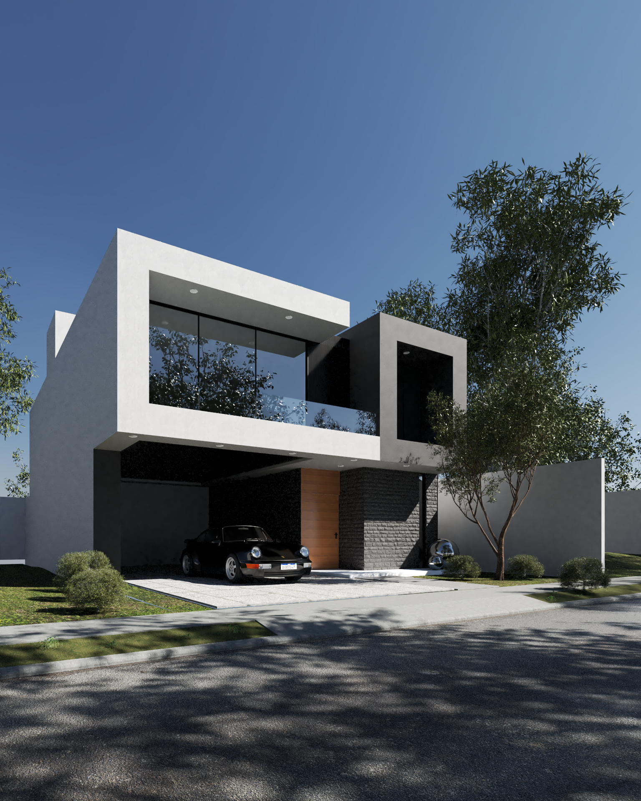
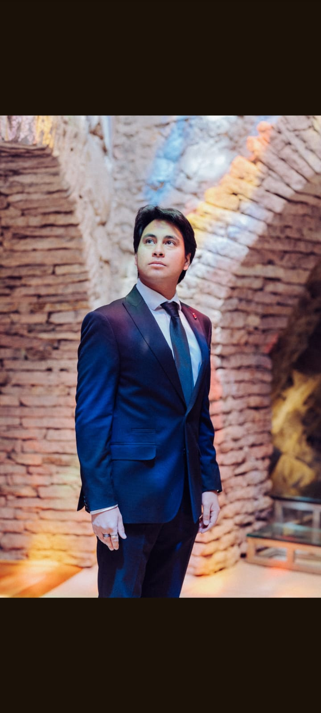

Creación de planos
Creamos los planos desde cero

Portafolio de trabajos
Creamos los planos desde cero
Creación de renders con recorrido virtual

Distribuimos y diseñamos los espacios de tu hogar

Mi nombre es Julio Enrique Cervantes Gómez.
Soy egresado del Centro Universitario Continental, mejor conocido como CUC. Cuento con experiencia en levantamiento topográfico, diseño de planos y recorridos virtuales, experiencia que obtuve en mi servicio en la presidencia municipal de Pachiquilla, así como en trabajos independientes.


Telefono: +52 771 135 8622
Correo: julio24.ceg@gmail.com